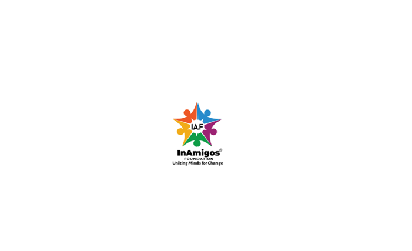
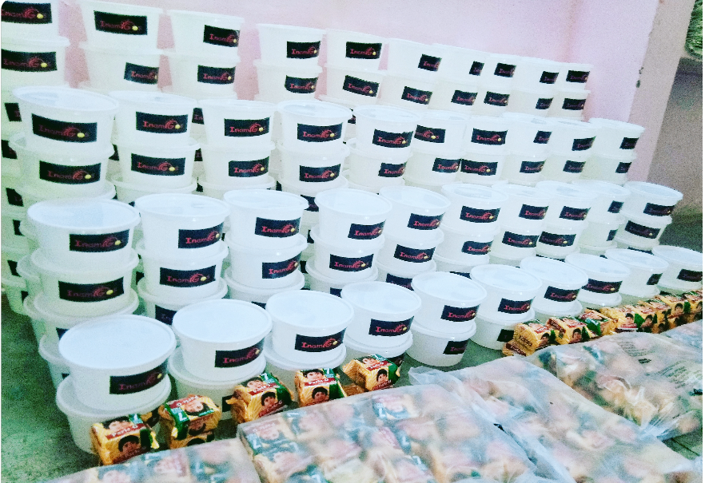
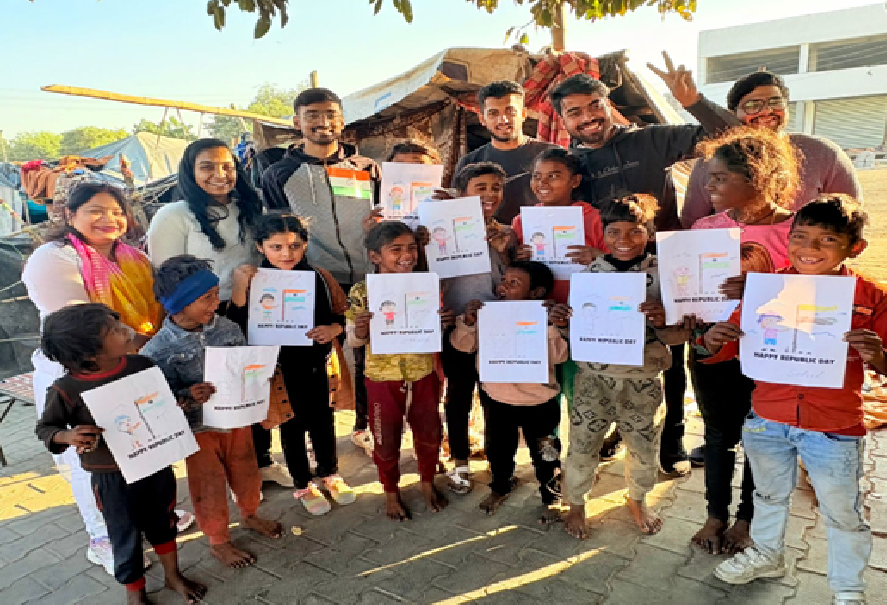
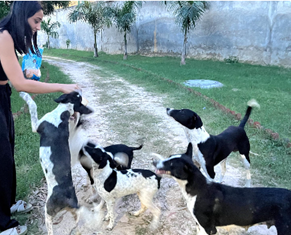
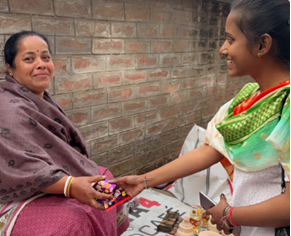
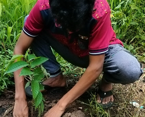
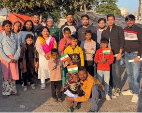
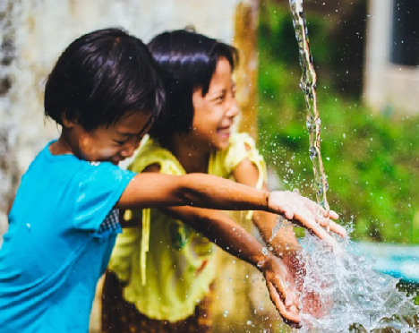
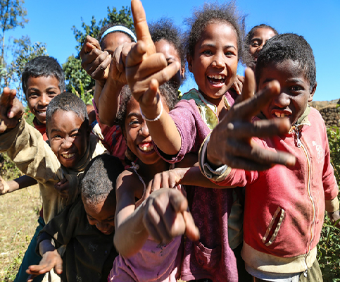
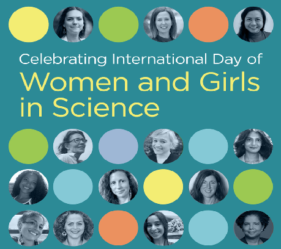

InAmigos Foundation is a youth-driven NGO committed to education, environmental sustainability, women empowerment, animal welfare, and community development across India.
Inspiring Change, Empowering Communities, and Building a Better Future.

Founded on 23 September 2020 by Govind Shukla, InAmigos Foundation is a Section 8 registered non-profit organization based in Chhattisgarh, India. Since its establishment, the foundation has been committed to creating meaningful and sustainable social impact by empowering individuals and strengthening communities across the country.
The organization believes that lasting change begins with collective action. Through the dedication of volunteers, interns, partners, and supporters, InAmigos Foundation has successfully implemented initiatives that address education, women empowerment, environmental conservation, animal welfare, community service, and youth skill development.
Every project undertaken by the foundation is driven by compassion, transparency, and a commitment to improving lives. From providing educational opportunities for children and empowering women with essential skills to protecting the environment and caring for stray animals, InAmigos Foundation strives to create opportunities that inspire hope and transform communities.
Meals & Clothes Distributed
Saplings Planted
Interns Trained
Animals Fed Daily
At InAmigos Foundation, our initiatives address critical social challenges through education, environmental conservation, women empowerment, animal welfare, community service, and skill development.

Project Seva focuses on serving underprivileged communities by distributing food and clothing. The initiative ensures that vulnerable individuals receive basic necessities while promoting dignity, compassion, and social responsibility.

BachpanShala bridges educational gaps by supporting children from economically weaker backgrounds. The project provides digital literacy, life skills training, and academic support to help children continue their education.

Project Jeev is dedicated to animal welfare by feeding stray animals every day through a passionate volunteer network. It promotes kindness, compassion, and responsible care for animals.

Udaan empowers women through skill development, financial literacy, menstrual hygiene awareness, and collaboration with rural self-help groups to encourage independence and confidence.

Project Prakriti promotes environmental sustainability by planting thousands of saplings, encouraging eco-friendly agricultural practices, and spreading awareness about protecting nature.

Project Vikas focuses on career growth and skill development by providing internships, practical training, and professional learning opportunities across multiple domains for aspiring youth.
InAmigos Foundation organizes awareness campaigns and community-driven events throughout the year to inspire positive social change.

An awareness campaign encouraging water conservation and sustainable water management while inspiring communities to work together for clean water accessibility.

An online interactive session promoting positivity, emotional well-being, self-care, and mental wellness through engaging discussions and activities.

Conducted in Rohtak, Haryana, this awareness program inspired young women to pursue careers in science and technology while promoting gender equality in STEM education.
Your support can transform lives. Volunteer, collaborate, or donate today.
Join Our MissionTogether we can create meaningful change. Whether you want to volunteer, partner with us, or support our initiatives, we'd love to hear from you.
Ward No. 5,
Gram Post, Sipat Ujwal Nagar,
Bilaspur, Chhattisgarh - 495555
support@inamigosfoundation.org.in
+91 62673 09902
www.inamigosfoundation.org.in